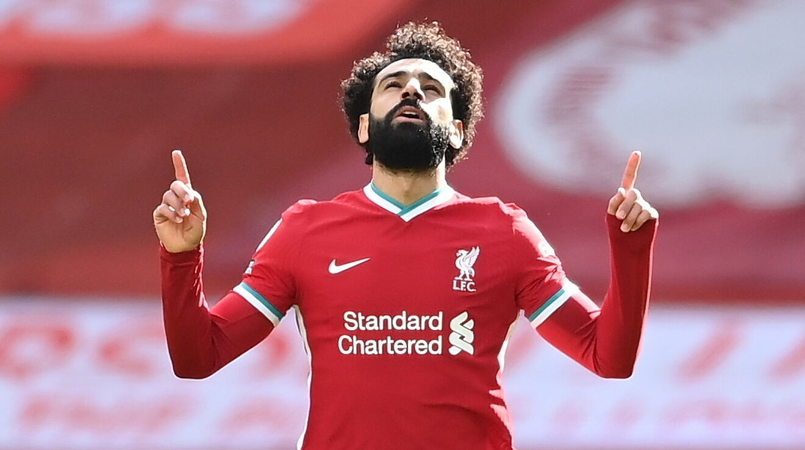
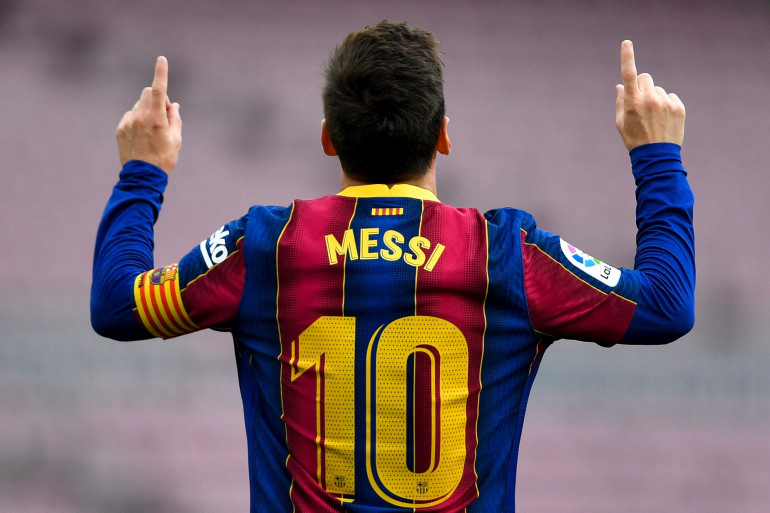
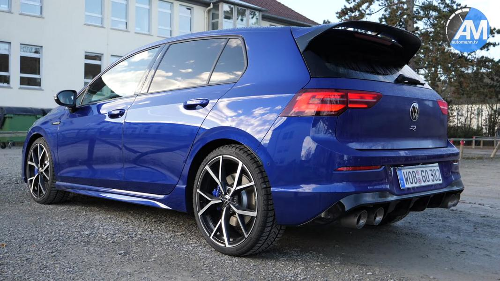

Titre de l'article
Article1
Depuis qu'elle est sortie le 19 novembre dernier, la console nouvelle génération de Sony, la Playstation 5, se fait désirer. Dès les premières semaines après sa sortie, quelques 4 millions de consoles ont été vendues, mais après cela les stocks se sont fait de plus en plus rares, voire même inexistants.
Grande nouveauté dans son esthétisme, la couleur bleu "Alpin" fait son entrée dans la petite famille des iPhone Pro. Par rapport à l'iPhone 12 Pro, il y a a des nouveautés quant à sa performance, grâce à l'utilisation d'une puce A15 Bionic, qui permet notamment une plus grande autonomie de batterie.
 Article2
GTA 6 est le grand mystère de la sphère du jeu vidéo. La suite de la célèbre franchise de jeux d'action aventure se fait attendre et dans l'impatience naissent les rumeurs. Récemment on parle d'un rachat de Take-Two par Microsoft. Une nouvelle de taille qui aurait de lourdes conséquences pour la communauté Playstation.
L'Audi RS6 est la version sportive de l'Audi A6 break. Elle est inspirée du concept SportVan présenté en 1985 au salon de Francfort. Logo de l'Audi RS6 Audi, semble-t-il pour rappeler son passé, propose la RS6 en version Avant (break) en premier et non la version berline d'abord, la RS21 en 1994. Break familial griffé du sigle « Rennen Sport » (RS), l'Audi RS6 Avant C6, présentée au salon de Francfort en septembre 2007, préfigure le design de la prochaine berline RS6 tout en affichant la nouvelle ligne stylistique lancée par Audi.
 Article3
La RX-7 est une automobile à moteur rotatif (composé de deux rotors lui conférant la particularité d'avoir une faible cylindrée tout en ayant une certaine puissance) produite par le constructeur japonais Mazda. C'est un modèle de voiture qui évoluera au cours du temps et plusieurs versions de celle-ci verront le jour. Ainsi vont naître successivement la SA22C, la FB, puis la FC3S, et enfin la FD3S.
Résultat de recherche d'images pour "rolls royce" BMW BMW a en effet acquis, pour 40 millions de livres, soit 400 millions de francs environ, la marque Rolls-Royce et les droits qui y sont associés auprès de son actuel propriétaire, le fabricant britannique de moteurs d'avions Rolls-Royce Plc
